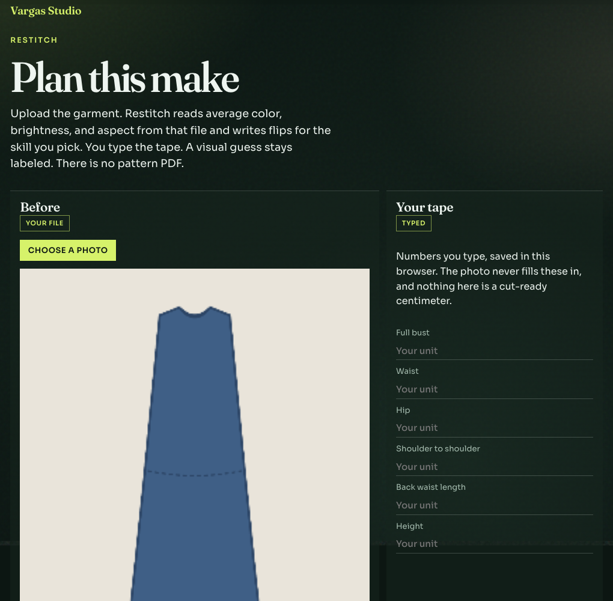
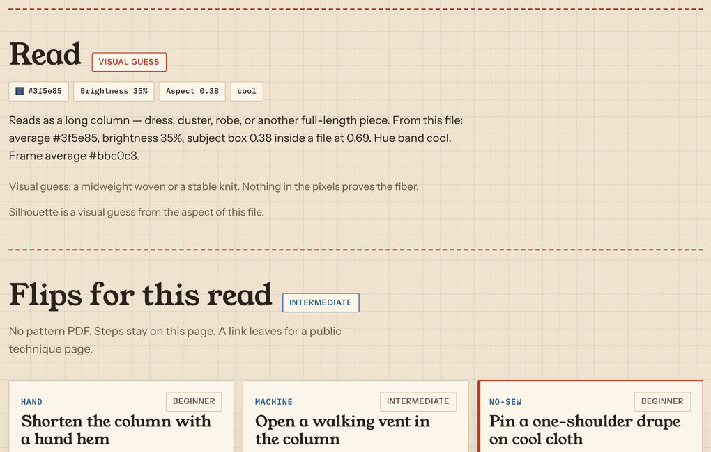

Restitch · story deck · Nov 2026
A thrift-flip planner. Upload a garment, pick your skill, get a no-sew, a hand and a machine flip.
[TODO] Founder name · role · email
Problem
A shopper brings home a long dress that's almost right. Every tutorial starts from someone else's garment and body. No machine, no plan, so it stays in the bag.
of US consumers bought secondhand in 2025.
Solution
Average color, brightness and aspect from the pixels. Labeled a visual guess.
Beginner, intermediate, advanced. One no-sew, one hand, one machine flip per read.
Each flip lists what to measure and shows the numbers you typed. Never guessed.
No pattern PDF. No account. Closet saved in the browser.
Product · live


Why now
Pinterest searches for “thrift flip ideas”; “refashion clothes upcycling” +230%.
of shoppers now discover secondhand through social, creators and influencers.
of US secondhand growth through 2030 comes from Gen Z and Millennials.
Market
Context, top-down
US secondhand apparel, 2025. Global: $393B.
Bottom-up
30M US people who sew weak est.
× 20% flip a thrift piece a year assumption = 6M SAM
× $19/yr assumption = $114M SAM revenue
Year 3: 0.5% pay = 30k × $19 ≈ $570k projection
Traction · honest
Working planner: upload, read, 3 skills, 29 flip recipes, browser closet.
[TODO] 0 counted
No analytics installed; the closet never leaves the browser.
$150 Meta over 14 days, 3 angles. Keep if ≥25% of landing visitors open the planner.
Business model · plan, not live
Free, no account. Cost to serve ≈ $0: static site, no AI calls. Trigger to charge: 40% “very disappointed” in a survey.
$19/yr assumption: creator-written flip packs, closet sync. Anchors: ReStitch $29.99/yr, Stash Hub $32.99/yr.
Flip nights with thrift stores and sewing studios, notions kits. planned
Go-to-market
Pins of real reads and before/after sketches against “thrift flip ideas” searches.
Before → read → after. The honesty is the hook: “what a photo can't tell you.”
[TODO] 5 creator collabs + 2 thrift-store flip nights
Competition
| Option | From a photo | Your own tape | No account | Price |
|---|---|---|---|---|
| ReStitch (iOS app) | Ideas + “smart analysis” | Custom measurements | App install | $12.99/mo · $29.99/yr |
| Rethread (Cait Conquers) | Scan → creator tutorials | Not stated | Pre-launch app | First scan free |
| Stash Hub | No: tracks stash | Stores measurements | App install | $3.49/mo · $32.99/yr |
| YouTube / TikTok how-tos | Someone else's garment | No | Yes | Free |
| Depop / Vinted | Sell it instead | n/a | Account | US seller fee $0 |
| Restitch | Color, brightness, aspect; labeled | Yes, typed | Yes | Free |
Team
Designed and shipped the live planner in Vargas Studio.
[TODO] Unfair advantage: sewing / thrift background?
Sewing educator or creator partner to write and test flip recipes.
The ask
[TODO] Amount · round · use of funds
Ad test + analytics: who opens the planner, who saves a flip.
Creator-tested flip packs; a real photo set, not drawings.
Fake-door Plus at $19/yr; keep if ≥3% of planner users click.